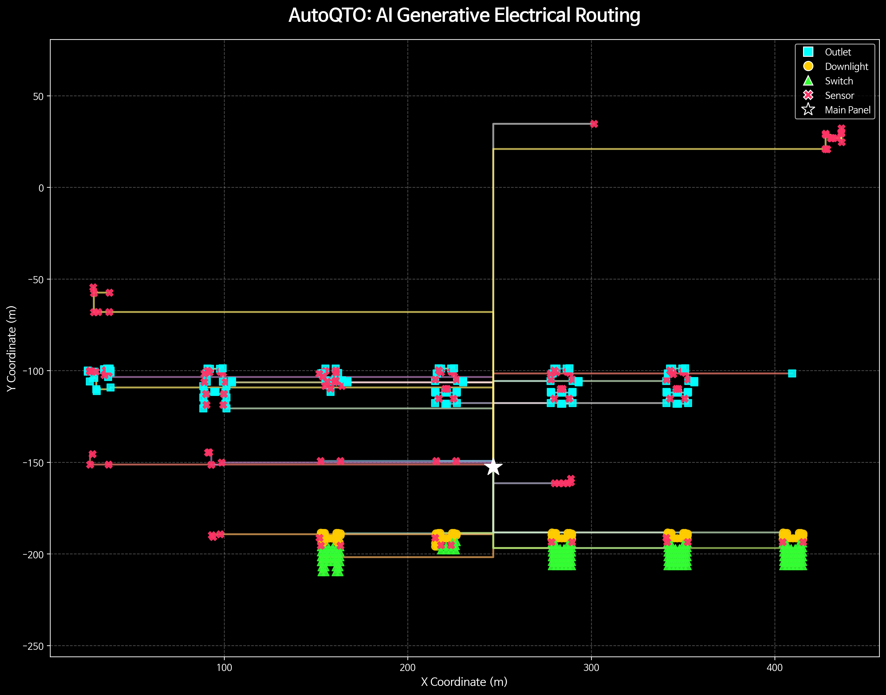
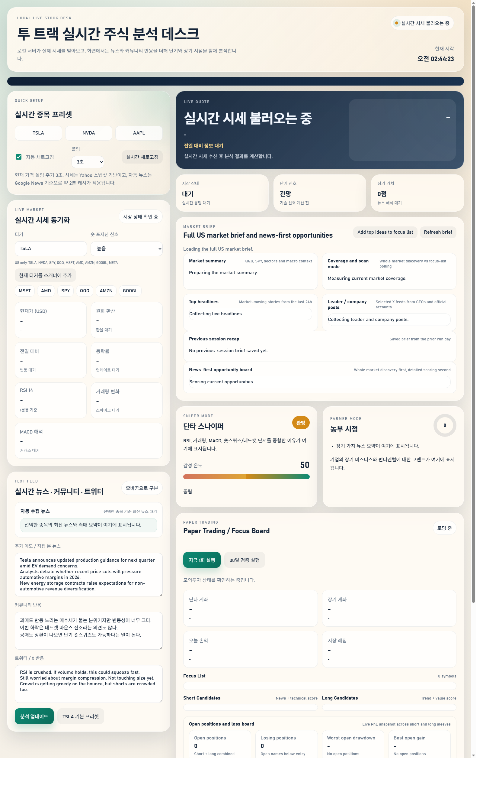

안녕하세요. 국민대학교 인공지능학부에서 학사 학위를 받았고, 의료 AI, Machine Unlearning, Kaggle 대회, 데이터 시스템 개발을 중심으로 공부하고 프로젝트를 진행해왔습니다. 연구에서는 문제 정의와 검증 기준을 중요하게 보고, 개발에서는 실제 사용자가 데이터를 탐색하고 판단할 수 있는 흐름을 만드는 데 관심이 있습니다.
News
Publications
Gradient Similarity-based Weight Initialization for Machine Unlearning
Research on Machine Unlearning using gradient similarity-based initialization. Experiments included pruning, knowledge distillation, poisoning checks, retain/forget evaluation, and privacy metric review.
Research Experience
Korea University College of Medicine
Clinical AI research on electrolyte response and fluid treatment prediction for MICU hyponatremia patients. Work includes feature definition, missingness review, timing interpretation, and evaluation design.
Kim Kwangsoo Lab
Medical AI research involving CDM exploration, pathology H&E/IHC registration, LightGlue/SuperGlue matching, cell segmentation, and a protein-variant paper retrieval MCP server.
Kookmin University ML&PR Lab
Machine Unlearning research focused on gradient similarity-based weight initialization and related pruning, KD, poisoning, and privacy evaluation experiments.
Projects

Electrical DWG/DXF Routing Estimator
CAD/DXF-based electrical construction estimation and routing project with Leean Construction Engineering. The current focus is unified DXF coordinates, route overlays, and Hanan Grid / rectilinear Steiner routing.

Stock News Analysis Desk
Local dashboard for reviewing U.S. stock prices, news feeds, source links, and positive/negative/neutral news classifications. The tool is designed for human review, not autonomous trading.
Medical CDM Explorer
Research support system that converts clinical questions, papers, or PDFs into reviewable cohort conditions and OMOP CDM-oriented structured outputs.
Machine Unlearning Research Notes
Public-safe summary of Machine Unlearning experiments connected to the PoPETs 2026 accepted work and NeurIPS 2023 Machine Unlearning Challenge experience.
NVIDIA Nemotron Reasoning
LoRA/PEFT reasoning challenge experiments, including verifier audits, failure taxonomy, adapter diversity review, and model merging plans.
NeuroGolf 2026
Kaggle experiment notes on graph/ONNX profiling, graph-surgeon style modifications, scoring audits, and submission management.
CAFA6 Protein Function Prediction
Protein function prediction experiments using sequence embeddings, ontology features, stacking, scikit-learn, and XGBoost.